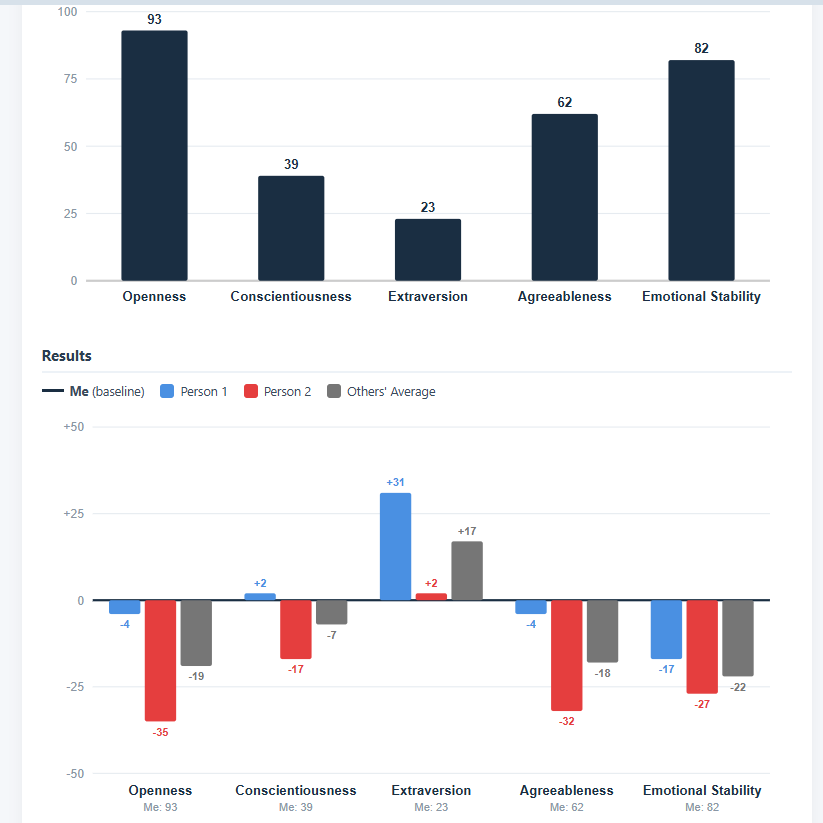
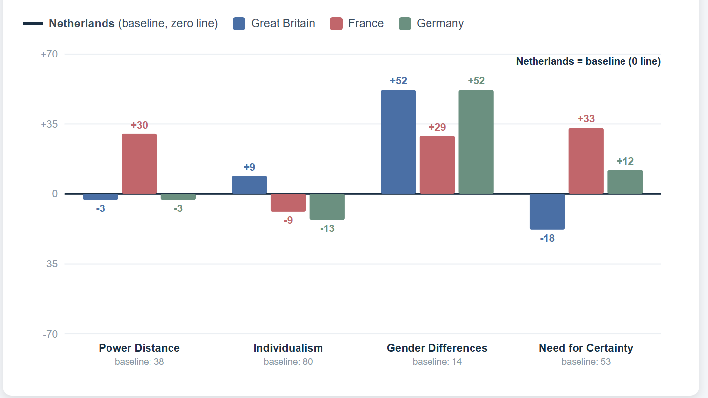

Om al deze redenen ben ik een programma gestart genaamd: A Second Look: Perspective Change en Personal Reorientation Through Dive Training. Het is een gewoon Divemaster-traineeship met daarbij eenvoudige, beproefde psychologische oefeningen onder begeleiding van de Divemaster trainee mentor, die je helpen om maximaal profijt te halen uit je ervaringen. Het is geen therapie, maar een manier om je bewust te maken van wat je doet, wat je leert en hoe je verandert.
Dit zijn heel basale psychologische hulpmiddelen, en ze passen van nature bij het programma. We kijken naar persoonlijkheid niet als een etiket, maar als een patroon, en we vergelijken hoe je jezelf ziet met hoe anderen je werkelijk zien. We kijken naar culturele verschillen, zodat je je ervan bewust wordt dat dingen heel anders gedaan kunnen worden, zonder dat de ene manier goed en de andere fout is. We werken met de drie cognitieve denkfouten die je het meest in de weg zitten wanneer je probeert te veranderen. En we gebruiken Rationeel Emotieve Therapie, een eenvoudige, goed onderbouwde techniek, om je echt inzicht te geven in waarom je op je omgeving reageert zoals je doet, en om je een concrete manier te geven om dat te veranderen.
We vragen iedereen in de groep om wat daar gedeeld wordt vertrouwelijk te houden — dit is geen regel die we kunnen afdwingen, alleen een verzoek, en bijna iedereen respecteert het, omdat ze ook hun eigen verhaal delen. De mentor stuurt de groep zachtjes weg van alles wat te persoonlijk, te rauw, of te makkelijk te betreuren is om te delen met mensen met wie je volgende week nog gaat duiken.
Belangrijker nog: een mentor die dit deel van het programma begeleidt, krijgt basale training om het verschil te herkennen tussen een normaal, soms emotioneel inzichtsmoment — waar dit programma vol van zit — en iets dat daaroverheen gaat: echt trauma, iets dat duidelijk meer nodig heeft dan een groep en een goed gesprek. Wanneer een mentor die grens ziet, stopt hij de activiteit, rustig, ter plekke, en zegt gewoon dat dit een professional verdient, niet ons. Dat is niet dat we je negeren. Dat is dat we precies weten waar onze competentie ophoudt.
Persoonlijkheid; de Big Five
Persoonlijkheid is een stabiel patroon van hoe iemand denkt, voelt en zich gedraagt in verschillende situaties en over jaren heen. Het is geen stemming, die is kortdurend. Mensen hebben de neiging om persoonlijkheid te beschrijven in types: hij of zij is een “typische extravert”. Zo werkt het in werkelijkheid helemaal niet. Na decennia van onderzoek bleek dat mensen van elkaar verschillen op vijf schalen, en op elke schaal kun je laag tot hoog scoren. Bovendien staat elke schaal los van de andere, dus je score op de ene schaal zegt niets over je score op de andere schalen.
Zelfevaluatie en 360-gradenfeedback
Laten we eerst kijken naar wat de vijf schalen zijn:
Openheid — hoeveel je aangetrokken wordt tot nieuwe ideeën, nieuwe ervaringen en abstract denken, versus hoezeer je de voorkeur geeft aan het vertrouwde, het concrete en het beproefde. Hoogscoorders worden rusteloos zonder afwisseling; ze houden van kunst, ideeën, reizen en het ter discussie stellen van hoe dingen werken. Laagscoorders zijn niet minder intelligent — ze vinden gewoon comfort en betrouwbaarheid in wat bekend is, en voelen geen sterke drang naar het onbeproefde.
Consciëntieusheid — hoe georganiseerd, gedisciplineerd en doelgericht je bent, versus hoe spontaan en flexibel. Hoogscoorders plannen vooruit, maken dingen af en houden hun omgeving op orde. Laagscoorders werken meer in vlagen, verdragen rommel en onzekerheid beter, en kunnen zich makkelijker aanpassen als plannen mislukken — maar hebben ook vaker moeite met afmaken en deadlines halen.
Extraversie — waar je je energie vandaan haalt. Hoogscoorders worden opgeladen door mensen, activiteit en prikkels — in de buurt van anderen zijn voelt goed, en rust of alleen-zijn kan uitputtend gaan aanvoelen. Laagscoorders laden juist andersom op — sociaal contact kost hen energie, en alleen-zijn herstelt die. Dit gaat niet over verlegen of zelfverzekerd zijn; een laagscoorder kan zich prima op zijn gemak voelen in gezelschap en het toch vermoeiend vinden.
Vriendelijkheid — hoezeer je harmonie en samenwerking laat voorgaan versus hoe bereid je bent wrijving te veroorzaken om te zeggen wat je werkelijk denkt. Hoogscoorders zijn warm, vertrouwend en vermijden conflict — ze gaan vaak liever mee in iets dan spanning te veroorzaken. Laagscoorders zijn sceptischer, directer en vinden het prima om openlijk van mening te verschillen.
Neuroticisme — hoe gemakkelijk je wordt meegetrokken in stress, zorgen of negatieve emoties, versus hoe stabiel en gelijkmatig je onder druk blijft. Hoogscoorders voelen dingen intenser en reageren sterker op tegenslagen — dit is geen zwakte, maar een zenuwstelsel dat "heter" draait. Laagscoorders blijven kalmer onder dezelfde druk, al kan dat soms overkomen alsof ze minder geraakt worden door dingen die voor hen wél zouden moeten meetellen.
Om het volstrekt duidelijk te maken: geen enkele score is "goed" of "slecht", het zijn slechts beschrijvingen.
We hebben online een tool voor je beschikbaar waarmee je jezelf op deze vijf dimensies kunt scoren. Dit geeft je wat inzicht in hoe je geneigd bent te reageren op je omgeving. Interessanter is om te kijken hoe mensen je in werkelijkheid zien, dus of jouw beeld van jezelf overeenkomt met het beeld dat mensen om je heen van je hebben. Daarom vragen we, na een maand in het programma, zodra mensen je echt hebben leren kennen, een paar van hen — je mentor, een paar mede-cursisten — om dezelfde test over jou in te vullen (jij doet natuurlijk hetzelfde voor hen). Dit geeft je een 360-gradenbeeld: hoe jij jezelf ziet, naast hoe je daadwerkelijk overkomt op mensen die je een maand lang blij, moe, in controle en geïrriteerd hebben meegemaakt. Ook dit is niet bedoeld om je te beoordelen, maar alleen om je inzicht in jezelf te geven.
Hier is een voorbeeld uit het instrument dat je gaat gebruiken:

Dit zijn verzonnen gegevens, maar ze laten zien wat voor informatie dit instrument oplevert. Zoals je kunt zien, heb ik een veel positiever beeld van mezelf dan anderen van mij hebben. Ik ben niet zo open, consciëntieus, vriendelijk of emotioneel stabiel als ik van mezelf denk... anderen kijken daar anders tegenaan. Ik ben ook veel extraverter dan ik van mezelf denk. Vooral op het gebied van emotionele stabiliteit zijn de twee anderen het onderling eens dat ik veel minder stabiel ben dan ik zelf denk. Interessante informatie, die we in de praktijk verder kunnen verkennen.
Dit verkennen we samen met jou in een persoonlijke sessie, en we gebruiken deze informatie ook daadwerkelijk in het programma.
Persoonlijkheid als gedrag: de Big Five in het echte leven

Het is ook leerzaam om echt te proberen of je deze individuele verschillen kunt herkennen in de manier waarop mensen dingen doen, in hun gedrag. Hierdoor word je veel beter in het “lezen” van mensen, wat het weer makkelijker en waardevoller maakt om met anderen om te gaan en samen te werken. Je krijgt een instrument dat gedrag per schaal beschrijft. Je neemt de tijd om echt een stapje terug te doen en mensen op een systematische manier te bekijken, wat verrassend leuk en leerzaam zal zijn.
Persoonlijkheid: de kloof
Hier gaan we reflecteren op de persoonlijkheidsgegevens. Na een paar weken heb je vragenlijsten ingevuld over jezelf en over anderen, en hebben anderen vragenlijsten over jou ingevuld. Je hebt ook daadwerkelijk op een systematische manier individuele verschillen kunnen observeren. Je gaat de kloof verkennen tussen wat we allemaal over onszelf denken en wat anderen over ons denken. Dat doen we met de foto-oefening hieronder, en ook in een gesprek met de mentor en een of twee belangrijke naasten.
We maken daarbij gebruik van inzichten uit onderzoek naar cognitieve bias en uit de Rationeel-Emotieve Gedragstherapie.
Culturele verschillen
Een belangrijk onderdeel van het succes van dit programma is de kans om in contact te komen met mensen uit verschillende culturen, en ook om onder gecontroleerde omstandigheden in een andere cultuur te leven. We hebben een instrument ontwikkeld waarmee je je bewust kunt worden van deze verschillen, en ze kunt gebruiken om te reflecteren op je eigen situatie.
In de jaren zestig en zeventig van de vorige eeuw liet onderzoek in tientallen landen zien dat culturen consistent van elkaar verschillen op een handvol meetbare dimensies — geen vage stereotypen, maar patronen die keer op keer terugkomen in de data, land na land, decennium na decennium. Deze dimensies zijn hier van belang:
Machtsafstand. In hoeverre mensen accepteren dat een leidinggevende macht over hen heeft. Hoog: mensen gehoorzamen, zonder tegenspraak. Laag: mensen verwachten dat er iets aan hen gevraagd wordt, en leidinggevenden moeten respect verdienen in plaats van het als vanzelfsprekend aan te nemen.
Individualisme. Of mensen zichzelf op de eerste plaats zetten, of de groep. Hoog: persoonlijke doelen en meningen staan voorop. Laag: familie, team of gemeenschap komt eerst, zelfs boven wat je persoonlijk wilt.
Man-vrouwverschillen. Hoe strikt een cultuur "stoer en competitief" aan mannen toeschrijft en "zorgzaam en zacht" aan vrouwen. Hoog: mannen concurreren en presteren, vrouwen zorgen, en wie daarvan afwijkt valt op. Laag: man-vrouwverschillen zijn klein
Onzekerheidsvermijding. In hoeverre mensen een vast plan en één juiste manier van doen nodig hebben om zich prettig te voelen. Hoog: mensen willen duidelijke regels en worden onrustig zonder die. Laag: mensen improviseren moeiteloos in onzekerheid.
We hebben een eenvoudig vergelijkingsschema gemaakt, waarin je je eigen land als uitgangspunt kunt nemen (zo kijken we er nu eenmaal allemaal naar, daar kunnen we niets aan doen) en dat naast het land kunt zetten waarin je traint, of de landen van je studenten, of van je medecursisten, tot wel vier tegelijk, zodat je de werkelijke cijfers naast elkaar ziet staan.
Elk van die scores beschrijft iets wat je decennia geleden hebt meegekregen, lang voordat je oud genoeg was om er ook maar iets van in twijfel te trekken, op dezelfde manier waarop je je taal hebt opgepikt: gewoon door er jarenlang mee omringd te zijn, zonder iets anders om het mee te vergelijken, en zonder ooit te horen dat het een keuze was in plaats van gewoon hoe de dingen zijn. Nu krijg je de kans om afstand te nemen en het in perspectief te zien.

Dit zijn echte gegevens. Ik ben Nederlands, dus ik heb Nederland als uitgangspunt gekozen. Wat meteen opvalt, is dat in mijn Nederlandse cultuur man-vrouwverschillen veel minder uitgesproken zijn dan in de rest van de landen. De Nederlandse cultuur heeft ook niet zo'n grote behoefte aan zekerheid… maar Groot-Brittannië heeft er nog minder.
Ook deze informatie kun je gebruiken om jezelf beter te leren kennen en meer perspectief te krijgen, en dat doen we ook in het programma.
Cognitieve biases
We interpreteren allemaal de wereld om ons heen en verzinnen verhalen over hoe de dingen zijn en wat onze rol daarin is. Meestal zijn die verhalen niet “waar”, of zelfs niet de meest logische, doeltreffende of prettige verhalen voor ons. Het probleem is dat we onszelf deze verhalen vertellen om dingen te vereenvoudigen, om ze begrijpelijk te maken: de wereld is veel te ingewikkeld om echt alles te begrijpen. Sterker nog, zelfs jijzelf bent veel te ingewikkeld om jezelf te begrijpen. Maar je verzint automatisch verhalen, zodat je hiermee kunt omgaan. We zijn ons er nauwelijks van bewust dat we dit doen, we geloven oprecht dat we de wereld ervaren “zoals die is”. Maar dat klopt NOOIT.
Waarheid doet er namelijk niet echt toe voor de overlevingsmachine die je brein in feite is. Sterker nog, als de waarheid in de weg staat van overleven, of veel te kostbaar is om te ontdekken, laat het dan maar zo. De waarheid kan te deprimerend zijn om er direct mee om te gaan, of gewoon irrelevant zijn. Jezelf voor de gek houden om je in elk geval oké te voelen over jezelf, en snelle beslissingen nemen die de meeste tijd redelijk goed uitpakken, dat heeft in het verleden geloond, en dat is wat deze denkfouten veroorzaakt.
Dus dingen kunnen misgaan, en dat gebeurt vaak. De enige manier om hiermee te werken, is proberen je bewust te worden van het feit dat je WÉL verhalen vertelt om jezelf te kunnen wijsmaken dat je dingen begrijpt. De volgende stap is dan simpelweg om de verhalen te veranderen die je ongelukkig maken en je ontwikkeling belemmeren.
De eerste manier om dit te doen is te kijken naar Cognitieve Denkfouten (Cognitive Biases). Een cognitieve denkfout is een systematische fout in het denken die ervoor zorgt dat mensen informatie verkeerd interpreteren en irrationele oordelen vellen. Deze denkfouten bepalen hoe mensen de werkelijkheid waarnemen en kunnen ervoor zorgen dat verschillende mensen dezelfde feiten anders interpreteren. Je hebt vast wel eens lijstjes hiervan gezien, die bewijzen dat je niet zo slim bent als je misschien denkt. We gaan werken met de drie denkfouten die het meest relevant zijn voor zelfontwikkeling binnen de Divemaster Trainee-omgeving.
Bevestigingsbias
Je zoekt altijd naar bewijs dat aantoont dat je gelijk hebt, en negeert bewijs dat laat zien dat je ongelijk zou kunnen hebben.
We hebben de neiging om vooral dingen op te merken die onze verhalen bevestigen, en dingen die niet passen simpelweg te negeren of te herinterpreteren. Ik ga je nu meteen bewijzen dat je dit op dit moment aan het doen bent.
Ik geef je een rij getallen, en jij moet raden welke regel erachter zit. Daarna mag je een getal noemen om te controleren of je de juiste regel te pakken hebt. Daar gaan we.
2 4 8 16 32
Nu zou elke normale persoon zeggen: “64”, want je merkt dat dingen steeds verdubbelen. En inderdaad, 64 is correct, ja, dat kan het volgende getal zijn. Dus je zegt: je verdubbelt gewoon het getal! Nee, je hebt het mis, dat is NIET de regel. Door mij te vragen of 64 goed is, kun je die regel niet controleren. Je moet een getal vragen dat GEEN verdubbeling is. Je moet niet proberen te bevestigen, maar proberen te weerleggen. Je had moeten vragen: “63?” of zoiets. Als ik nee zeg, kun je iets zekerder zijn dat verdubbelen de regel is. Maar in werkelijkheid zeg ik: “ja, 63 is goed.” Nu weet je zeker, absoluut zeker, dat de regel NIET verdubbelen is. Merk op dat vragen naar 64 je die informatie helemaal niet geeft. (De regel is in werkelijkheid: het volgende getal moet groter zijn, dat is alles. Ik heb je erin geluisd, zoals de wereld voortdurend doet).
Deze bias is uitermate gevaarlijk, omdat hij je een vertrouwen geeft dat nergens op gebaseerd is. Deze bias kan er zelfs voor zorgen dat zeer ervaren piloten proberen te landen op een taxibaan vol wachtende vliegtuigen. Bekijk deze fascinerende video die dit laat zien:
https://youtu.be/bLEGir9lzBo?t=705
Als confirmation bias er zelfs voor kan zorgen dat uiterst ervaren en uiterst goed getrainde piloten alle feiten wegredeneren dat een taxibaan er niet eens uitziet als een landingsbaan (met opzet, mag ik daaraan toevoegen), welke kans hebben wij dan in het gewone leven, in de echte, ingewikkelde wereld? Niet veel, maar we moeten in elk geval proberen ons ervan bewust te zijn dat het verhaal dat we onszelf vertellen misschien niet waar is, en dat we het misschien iets beter kunnen controleren.
Je ziet dat dit niets vaags of mystieks is.
Het punt hier is dat je jezelf altijd moet afvragen:
“Wat als mijn beeld van de wereld of van mezelf niet helemaal klopt?”
En begin dan actief te zoeken naar bewijs dat tegenspreekt wat je gebruikelijke verhaal is. Om het volkomen duidelijk te maken: het doel is niet “positief denken”. Het doel is om te proberen een nauwkeuriger beeld van jezelf in je omgeving te krijgen door aandacht te besteden aan dingen die tegen je ideeën ingaan. Als je gelooft “ik kan niet goed met mensen omgaan,” zul je vanzelf dingen opmerken die dit “bewijzen”: je merkt de ongemakkelijke gesprekken op en negeert de keren dat mensen het fijn vonden om met je te praten. Als je gelooft “ik zit vast in mijn leven,” zul je aandacht besteden aan alles wat “bewijst” dat je vastzit en kansen om te veranderen negeren. Hier komt de Big Five-observatie van anderen goed van pas: die geeft je een beter, objectiever beeld van wat je daadwerkelijk doet en hoe anderen op je reageren. In het programma leren we je te zoeken naar dingen die je eigen idee over jezelf weerleggen.
Fundamentele attributiefout
Je successen komen doordat je competent bent en je mislukkingen zijn pech, maar de successen van anderen waren gewoon geluk, en hun mislukkingen komen door incompetentie.
Als we zelf iets proberen te doen, zijn we ons volledig bewust van onze intenties. We beoordelen het resultaat op basis van die intenties. Als het mislukt, waren je bedoelingen in elk geval goed, en had je waarschijnlijk gewoon veel pech dat het niet lukte. Als we naar anderen kijken, hebben we geen idee van hun intenties. We kunnen niet in hun hoofd kijken, dus we kijken alleen naar de resultaten van hun gedrag. Als het bij hen mislukt, komt dat doordat ze iets verkeerd hebben gedaan. Zo beoordelen we onszelf op intenties, maar anderen alleen op resultaten. En dat zorgt ervoor dat we denken dat het, als het bij onszelf niet lukt, vooral pech was, maar dat het bij anderen komt doordat ze idioten zijn die niet weten wat ze doen.
Op zichzelf is dit een heel nuttige vertekening, want het zorgt ervoor dat je je goed voelt over jezelf, zelfs als het misgaat. En weet je, misschien heb je zelfs (soms) gelijk. Dit wil niet zeggen dat je op sommige gebieden geen expert kunt zijn en het echt beter kunt weten. Maar door deze vertekening ga je denken dat je altijd gelijk hebt. En de prijs die je daarvoor betaalt, is dat je minder geneigd bent om van je fouten te leren (het was toch maar pech, er valt niets te leren) en dat je anderen niet genoeg krediet geeft om met hen samen te werken en, nog belangrijker, van hun fouten te leren (ze hebben tenslotte bewezen idioten te zijn). Houd dit lang genoeg vol, en je eindigt met het idee dat jij de enige min of meer competente persoon bent in een wereld vol dwazen.
Door jezelf in een nieuwe omgeving te plaatsen met andere mensen die het daadwerkelijk beter weten, krijg je de kans om die vertekening te betrappen en krijg je de gelegenheid terug om het plezier te ervaren van samenwerken met en leren van anderen.
Spotlight-effect
Sterk overschatten hoeveel andere mensen merken, beoordelen of onthouden wat jij doet.
Als mens, met toegang tot alles wat er in je hoofd omgaat, ben je behoorlijk met jezelf bezig. Dat moet ook wel, om te overleven. Maar de fout die je hier maakt, is dat je aanneemt dat andere mensen net zo met jou bezig zijn als jij zelf. Dat zijn ze niet. Zij zijn ook met zichzelf bezig en hebben geen tijd en geen interesse om jou en de details over jou op te merken. Ja, je bent volwassen en je weet dit best, maar het punt is dat je waarschijnlijk nog steeds enorm overschat hoeveel aandacht mensen echt aan jou besteden.
Er zijn fascinerende experimenten waarbij mensen interactie hebben met een verkoper, een paar seconden worden afgeleid, en in die paar seconden wisselt de verkoper van plaats met iemand anders, met ander haar, andere kleren. De meeste mensen merken er zelfs helemaal niets van.
https://youtu.be/VkrrVozZR2c?t=110
En terecht merken ze deze dingen niet op. Ons vermogen om informatie te verwerken is beperkt, en we kunnen niet zomaar aandacht besteden aan elk detail in elke situatie. Het punt hier is dat er een goede kans is dat je jezelf martelt met gedachten over wat mensen van je denken, wat je hebt gezegd en gedaan... terwijl ze in werkelijkheid helemaal niet aan je denken, laat staan aan wat je hebt gezegd en gedaan. Ze zijn veel te druk bezig met zich zorgen te maken over wat anderen van hén denken...
Er is nog een amusante demonstratie van het spotlight-effect, en die draait om de allerminst coole Barry Manilow. Onderzoekers lieten eerstejaarsstudenten een T-shirt dragen met een grote foto van Barry Manilow erop. Van tevoren was getest dat Barry Manilow gênant zou zijn voor deze doelgroep — hij was eind jaren negentig bepaald geen coole campusicoon. Een student met het shirt liep dan een ruimte in met een paar andere studenten, en na een paar minuten vertrok hij weer. En dan komt de truc.
De T-shirt-drager werd gevraagd te schatten welk percentage van de mensen in de ruimte zou kunnen zeggen wie er op het shirt stond, en de mensen in de ruimte werd op hun beurt gevraagd of ze eigenlijk iets hadden opgemerkt.
Degenen met Barry op hun T-shirt dachten dat ongeveer de helft het zou hebben opgemerkt, terwijl slechts een kwart het daadwerkelijk had gezien. Dus: je draagt het meest oncoole shirt ooit, en slechts zo'n 25% merkt het echt op. Een ontnuchterende gedachte.
In ons programma laten we je de spotlight-bias in actie zien, zodat je jezelf niet langer hoeft te kwellen over je imago.
Rationeel-emotieve gedragstherapie
Er is nog een instrument in het programma, en dat brengt de andere bij elkaar: Rationeel-Emotieve Gedragstherapie, of RET. Het idee erachter is simpel, en je hebt het al gevoeld bij de biases hierboven: onze reacties, gedachten en emoties zijn niet gebaseerd op wat er in de wereld gebeurt, maar op onze interpretatie van die gebeurtenissen — psychologen noemen dit appraisal, of beoordeling. Het werd halverwege de jaren vijftig ontwikkeld en bouwt een hele methode op rond dit ene idee: als je je beoordeling bewust maakt en onder controle krijgt, kun je je reactie op vrijwel alles wat je overkomt veranderen.
Rationeel-Emotieve Gedragstherapie maakt gebruik van het inzicht dat we allemaal in meer of mindere mate lijden onder vier irrationele gedachten die onze interpretatie van gebeurtenissen kleuren. Deze irrationele gedachten zijn gemakkelijk te herkennen omdat ze absolute woorden bevatten zoals "moet," "zou moeten" of "altijd":
Eisen stellen
Dit zijn rigide "moetens," "zoutens," die we onszelf en anderen opleggen. Voorbeelden zijn: "Ik moet goed presteren en goedkeuring krijgen, anders ben ik waardeloos." "Anderen moeten mij eerlijk en met respect behandelen."
Catastroferen
Dit is het beoordelen van zelfs een licht vervelende gebeurtenis als het ergste wat er kan gebeuren, bijna het einde van de wereld.
Lage frustratietolerantie / "ik-kan-het-niet-verdragen-itis
Het geloof dat je ongemak, frustratie of onvervulde verwachtingen niet kunt verdragen — "Dingen moeten altijd gaan zoals ik het wil."
Veralgemeend falen
Dit is wanneer we de waarde van een hele persoon, of onszelf, beoordelen op basis van één enkele mislukking: "Ik heb gefaald, dus ben ik nutteloos." "Zij hebben mij onrecht aangedaan, dus zijn zij een slecht mens."
Deze gedachten zijn irrationeel omdat ze absoluut zijn en omdat het niet in je eigen belang is om ze te hebben. Het is veel gezonder om te denken dat je niet altijd hoeft te presteren en te winnen, dat anderen je soms gewoon slecht behandelen zonder dat daar een reden voor is, dat een kleine nederlaag of tijdelijk gebrek aan succes niet het einde van de wereld is, om te denken dat je een volwassene bent die een flinke dosis frustratie aankan, en dat mensen, jijzelf inbegrepen, fouten maken en dat dit jou of hen niet tot idioten of slechte mensen maakt.
Rationele Effectiviteitstraining (RET) probeert je op zulke gedachten te betrappen door te kijken naar een gebeurtenis die je zelf kiest omdat die betekenisvol voor je was en je negatieve emoties gaf. Een gebeurtenis die je ongelukkig maakte. Dit is het leerzaamst en leukst om in een kleine groep te doen, omdat dan duidelijk wordt hoe verschillend mensen kunnen denken en reageren.
Eerst helpt een mentor je om deze gebeurtenis in zuiver feitelijke termen te beschrijven, met zo weinig mogelijk interpretatie. "Ze keken me op die agressieve manier aan" is bijvoorbeeld een interpretatie, "ze keken naar me" is een feitelijke uitspraak. Daarna verken je wat je dacht, wat je interpretatie was: "Ze hebben het altijd op me voorzien, en ze kijken me aan met agressie en minachting." Let op: hier zitten nog geen gevoelens in, alleen je interpretatie. En pas daarna spreek je je gevoelens uit: "dat maakte me boos en onzeker."
En nu kunnen we zien hoe je interpretatie ervoor zorgde dat je je zo voelde, en idealiter verander je die interpretatie zodat je er een positieve, of op zijn minst geen negatieve, emotie bij krijgt. Dat doen we door vragen te stellen over die interpretatie: hoe weet je dat ze agressief keken? Misschien waren ze erg geconcentreerd en heb jij ze gestoord. Hoe weet je dat ze agressief tegen jou waren? Misschien hadden ze ruzie en kwam jij toevallig binnen. Waarom is het zo erg dat ze boos op je waren (hier komen de vier irrationele gedachten echt naar boven: iedereen moet me altijd aardig vinden, ik ben een slecht mens als mensen boos op me zijn, als mensen zo naar me kijken zijn het door en door slechte mensen, enzovoort). Zodra je kunt accepteren dat je de situatie kunt interpreteren zoals je zelf wilt, kun je kiezen voor een interpretatie die je daadwerkelijk ten goede komt.
Ja, het kan zijn dat je gelijk hebt: deze mensen hebben het misschien echt op je voorzien en zijn agressieve, vervelende mensen. Maar het is veel constructiever om ervan uit te gaan dat je irrationele gedachten hebt over de interpretatie van hun gedrag. De Waarheid (wat dat ook moge zijn) doet er bij het gebruik van deze techniek eigenlijk niet toe.
Het is een heel eenvoudige, maar zeer krachtige techniek zodra je hem onder de knie hebt. Tijdens je programma zullen we in een kleine groep bij elkaar komen en verkennen hoe je deze techniek kunt gebruiken door hem daadwerkelijk met elkaar te oefenen.
De Reframe Story Photo Video-oefening
In deze leuke oefening brengen we alles samen. Vanaf de derde week komen, één keer per week, maximaal drie Divemaster-trainees uit het programma samen met de mentor. Je hebt natuurlijk foto's gemaakt, maar hier laat je ons een of twee foto's zien die iets voor je betekenen: iets dat je raakte, verraste, of je dingen liet zien op een andere manier dan je voorheen zou hebben gedaan. De foto zelf hoeft dit niet direct te tonen. Het is een aanleiding, geen illustratie. De foto zelf kan werkelijk van alles zijn.
Soms laat de foto je iets zien over je eigen persoonlijkheid, misschien een moment waarop je jezelf betrapte op precies dat gedrag dat je Big Five-gegevens voorspelden. Soms sluit het aan bij de culturele verschillen waarover je hebt geleerd, iets kleins dat pas logisch wordt zodra je het zo bekijkt. En vaak, zodra je het verhaal achter de foto begint te vertellen, merk je nog iets anders op: dat je vasthoudt aan een interpretatie zonder die ooit te toetsen, dezelfde truc die bevestigingsvooringenomenheid altijd met je uithaalt. Of je hoort jezelf een moment beschrijven dat je van slag maakte, en dit is een perfecte gelegenheid om RET toe te passen, ter plekke in de groep: wat er werkelijk gebeurde, wat je tegen jezelf zei daarover, en wat je voelde — en of er een andere, minder pijnlijke manier was om datzelfde moment te lezen.
Je vertelt de anderen waarom je juist die foto's hebt gekozen, je verkent de emotionele en psychologische betekenis erachter, en vooral hoe je dingen anders begint te zien dan vroeger. De groep kan vragen stellen om dit helder te krijgen, en zo helpt het jou ook om je eigen gedachten scherper te krijgen.
Nogmaals: dit is geen steungroep, en het is geen kritieksessie. Deze oefening doet twee dingen: doordat je op zoek bent naar situaties die voor jou betekenisvol zijn, besteed je meer aandacht aan je eigen groei- en veranderingsproces. Het dwingt je ook om je ervaringen in woorden te vatten, in een verhaal, en dat helpt je om het echt te verwerken en erop te reflecteren.